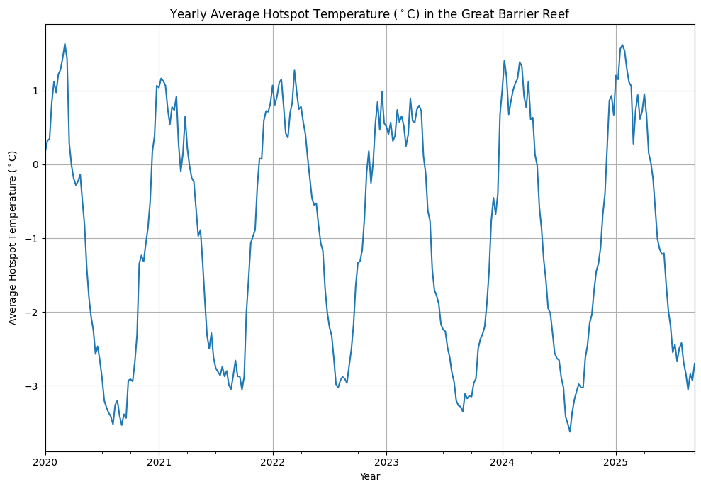
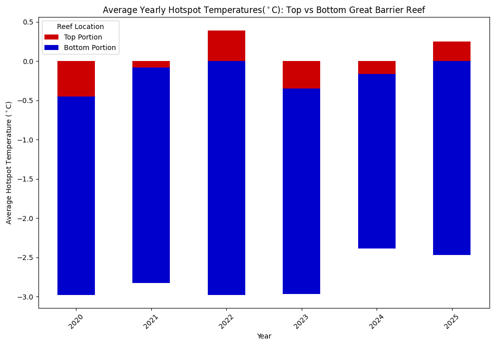

84.4% of the world's coral reef has been impacted by bleaching.1
Coral bleaching is a coral's response to environmental stress which results in expelling tiny algaes called zooxanthellae causing the coral turning white.2 The algae is important and essential for corals as they help produce sugars for the corals to consume through photosynthesis and more than 90% of the corals food requirements come from these algae.2 When the corals turn white, they become vulnerable and potentially could die depending on how high the water temperature stays. In the cases where the coral is able to recover, they show signs of growing slower, reduced reproduction, and suspectible of diseases.
Corals are important assets in the marine wildwife as they are habitats for marine animals use to avoid predators. Some marine animals also feed on coral in order to sustain their diet such as sea turtles and protect coastlines from flooding during storms. They are also one of the biggest factors in the ocean's ability to absorb carbon dioxide emissions and excess heat in the atmosphere.3 Thus, it is important to notice what is going on with the coral ecosystem to see what kind of changes have occured and monitor any potential changes in the ocean waters while also monitoring the changes in coral bleaching.
For this study, I conducted an observation of the data that was compiled by the National Environmental Satellite, Data, and Information Service (NOAA) looking specifically at the Great Barrier Reef from the years 2020-2025 with data of 7 day changes in temperature. This specific area was chosen due to its popularity, but also having data on the entire globe can go up to several hundreds of gigabytes. In this study, I wish to be able to find the answer to three questions based on this data:
- What time period is found to have the highest amount of heat signature levels in the last five years?
- Are we able to find significant differences in heat signature in the northern front compared to the south?
- Can we identify how much degree heat week (DHW) units are required that caused significant bleaching in the great coral reefs?
What time period had the highest heat signature?
While looking at the data, there was a couple of things that stood out while analyzing the line graph for the temperature changes in the Great Barrier Reef. While observing the temperature changes, it can be noted that the temperature of the water changes drastically over time as it goes from the 
Is there significant differences in the north and south temperatures? 
Can we identify how much heat is required to cause significant bleaching in reefs?

Citations